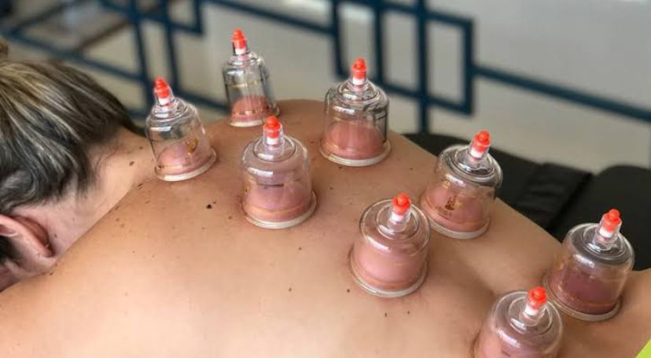
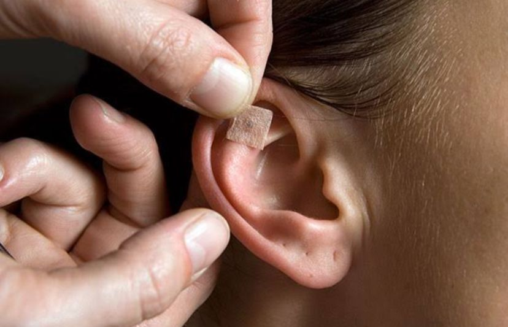
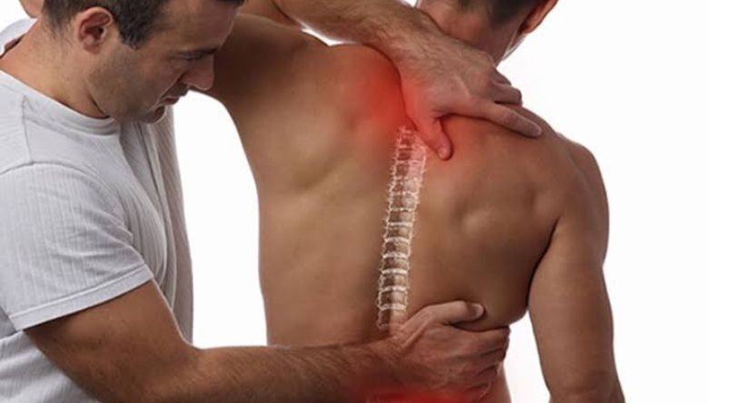
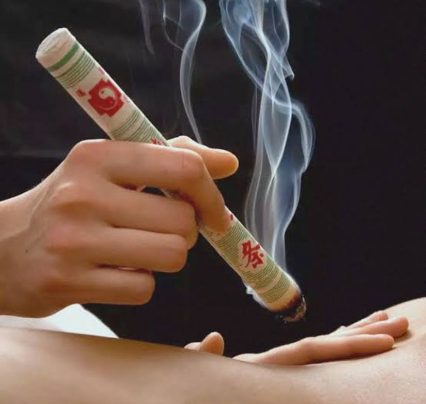

Dr. Daniel Reis Fenolio
Sou Fisioterapeuta e é um prazer recebê-lo(a) aqui.
Minha jornada na Fisioterapia começou com a formação na prestigiada Faculdade Anhembi Morumbi, em São Paulo. Essa base me deu o conhecimento e as ferramentas necessárias para atuar com dedicação total ao seu bem-estar.
Acredito profundamente que o tratamento deve ser único, assim como você. Por isso, meu foco é oferecer uma reabilitação que respeite suas necessidades, seu ritmo e seus objetivos.
Estou aqui para guiar você rumo à recuperação e a uma vida com mais qualidade e movimento!
Tratamentos
Fisioterapia

Exercícios para aliviar dores e melhorar a mobilidade.
Acunputura Dry Needling

Técnica de agulhamento seco para alívio de dores musculares, relaxamento e melhora da função corporal.
Ventosaterapia
Terapia com ventosas para melhorar a circulação, aliviar tensões e estimular a recuperação muscular.
Auriculoterapia
Estimuação de pontos na orelha para aliviar dores, reduzir estresse e promover equilíbrio corporal.
Quiropraxia
Ajustes e técnicas manuais para melhorar postura, aliviar dores e restaurar o equilíbrio da coluna.
Kinesio Taping

Aplicação de fitas terapêuticas para suporte muscular, redução de dores e melhora da mobilidade.
Moxaterapia
Terapia com calor aplicado em pontos específicos para aliviar dores, estimular a circulação e promover bem-estar.
Contato
Entre em contato pelo e-mail: danielreisfenolio@icloud.com
Ou pelo telefone: (11) 94183-7365